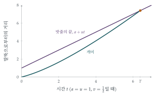

STEP II 2018, 문제 10
계속 읽기 전에 문제를 먼저 읽어 보자. 문제는 STEP Support Programme의 문제 데이터베이스에 있다: step.maths.org/questions/18-s2-q10
도입
개미 한 마리가 길이 1킬로미터인 고무 밧줄 위를 초속 1센티미터로 걸어가기 시작한다. 밧줄은 1초마다 1킬로미터씩 고르게 늘어난다. 먼 쪽 끝은 초속 1000미터로 멀어지니 개미보다 10만 배나 빠르다. 개미는 언젠가 끝에 도달할까?
놀랍게도 도달한다. 밧줄이 늘어나면서 개미도 함께 실려 가고, 밧줄 전체에 대한 비율로 본 개미의 전진은 점점 줄어들지만 그 비율들을 모두 더하면 조화급수(harmonic series)처럼 되는데, 조화급수는 발산(diverge)한다(2.3 절). 그래서 개미는 결국 도착한다. 다만 우주의 나이가 하찮아 보일 만큼 긴 시간이 지난 뒤이다. 이 문제는 연속적인 경우를 정확히 풀어, 걸리는 시간이 두 속력의 비에 대해 지수적으로 커진다는 것을 보인다.
시작하기 전에
줄은 고르게 늘어난다. 즉 줄의 모든 부분이 같은 배율로 늘어난다. 시각 \(t\)에서 줄의 길이는 \(a + ut\)이다. 말뚝으로부터 거리 \(x\)인 점이 전체의 \(\frac{x}{a + ut}\)만큼의 비율에 있다면, 이 점은 얼마나 빨리 움직이는가?
줄 위의 각 점은 길이에 대한 비율 \(f\)를 그대로 유지하므로, 말뚝으로부터의 거리는 \(f(a + ut)\)이고 속력은 \(fu = \frac{ux}{a + ut}\)이다. 말뚝 가까이의 점들은 거의 움직이지 않고, 먼 쪽 끝은 속력 \(u\)로 움직인다.
차근차근 풀기
단계 1 개미의 방정식
개미는 줄에 대해 속력 \(v\)로 움직이고, 여기에 개미 아래에 있는 줄의 속력이 더해진다. \[\frac{\mathrm{d}x}{\mathrm{d}t} = v + \frac{ux}{a + ut}.\]
몫의 미분법(quotient rule)으로 \(\frac{x}{a + ut}\)를 미분하고 \(\dot x\)에 대한 방정식을 이용하라.
\[\frac{\mathrm{d}}{\mathrm{d}t}\Bigl(\frac{x}{a + ut}\Bigr) = \frac{\dot x}{a + ut} - \frac{ux}{(a + ut)^2} = \frac{1}{a + ut}\Bigl(v + \frac{ux}{a + ut}\Bigr) - \frac{ux}{(a + ut)^2} = \frac{v}{a + ut}. \qed\] 개미가 지나온 줄의 비율은 \(\frac{v}{a + ut}\)의 비율로 증가한다. 이는 개미 자신의 속력을 현재 길이로 나눈 값이다. 늘어남은 어느 점의 비율도 바꾸지 않으므로 식에서 완전히 사라진다.
단계 2 끝에 도달하기
\(0\)부터 \(t\)까지 적분하라. 비율은 언제 \(1\)이 되는가?
개미는 말뚝에서 출발하므로 \[\frac{x}{a + ut} = \int_0^t\frac{v\,\mathrm{d}s}{a + us} = \frac vu\ln\frac{a + ut}{a}.\] 개미는 비율이 \(1\)일 때 끝에 도달한다. 즉 \(\ln\frac{a + uT}{a} = \frac uv = k\)이므로 \(a + uT = ae^k\)이고, 다시 말해 \[uT = a(e^k - 1). \qed\] 로그는 한없이 커지므로, 밧줄이 아무리 빨리 늘어나도 개미는 반드시 도착한다.
단계 3 돌아오는 길
돌아올 때 줄에 대한 개미의 속력은 \(-v\)이다. 이제 비율의 변화율은 얼마인가? 개미는 시각 \(T\)에 비율 \(1\)에서 출발한다.
\(-v\)로 같은 계산을 하면 \(\frac{\mathrm{d}}{\mathrm{d}t}\bigl(\frac{x}{a + ut}\bigr) = -\frac{v}{a + ut}\)이므로 \[\frac{x}{a + ut} = 1 - \frac vu\ln\frac{a + ut}{a + uT}.\] 비율은 \(a + ut = (a + uT)e^k\)일 때 \(0\)이 된다. \(a + uT = ae^k\)이므로 돌아오는 데 걸리는 시간은 \[t - T = \frac{(a + uT)(e^k - 1)}{u} = \frac{ae^k\cdot uT/a}{u} = Te^k. \qed\] 돌아오는 길은 가는 길보다 \(e^k\)배 오래 걸린다. 개미가 방향을 돌릴 때쯤에는 줄이 처음보다 \(e^k\)배 길어져 있기 때문이다.

돌아보기
알맞은 변수를 쓴다. 밧줄을 지나온 비율이 자연스러운 양이었다. 늘어남이 이 양을 바꾸지 않기 때문이다.
모습을 감춘 적분인자. \(\frac{1}{a + ut}\)를 곱하자 선형 미분방정식(linear differential equation)이 완전한 도함수의 꼴이 되었다. 이것은 적분인자(integrating factor)의 방법이다.
발산은 속력을 이긴다. 비율은 로그처럼 증가했고 로그는 유계가 아니므로, 개미는 반드시 도착한다.
숨은 수학
조화급수 버전
이 퍼즐은 보통 띄엄띄엄 늘어나는 형태로 소개된다. 밧줄의 길이는 \(1\) km이고, 개미는 첫 1초 동안 \(1\) cm를 걷는다. 그다음 밧줄이 \(1\) km 늘어나고, 다시 개미가 1센티미터를 걷고, 이런 식으로 계속된다. \(n\)번째 초에 개미는 길이 \(n\) km인 밧줄에서 \(1\) cm를 가므로, 비율로는 \(\frac{1}{100\,000\,n}\)만큼 간다. 늘어남은 비율을 바꾸지 않으므로 \(N\)초 뒤에 개미는 밧줄의 \[\frac{1}{100\,000}\Bigl(1 + \frac12 + \frac13 + \cdots + \frac1N\Bigr) \approx \frac{\ln N + 0.577}{100\,000}\] 만큼을 지나왔다. 개미는 \(H_N \approx 100\,000\)일 때, 즉 약 \(e^{100\,000}\)초 뒤에 도착한다. 이 수는 \(43\,000\)자리가 넘는다. (비교하자면 우주의 나이는 약 \(4 \times 10^{17}\)초이다.) 연속 버전의 답도 이와 일치한다. \(k = \frac uv = 100\,000\)이고 \(T \approx \frac aue^k\)이다.
팽창하는 우주 속의 빛
밧줄 위의 개미는 팽창하는 우주를 가로지르는 빛의 모형이다. 먼 은하들은 공간 자체의 팽창에 실려 우리에게서 멀어지고, 그 은하에서 나온 빛은 개미가 늘어나는 밧줄 위를 걷듯이 팽창하는 공간을 통과하여 속력 \(c\)로 우리를 향해 온다. 먼 은하의 빛이 언젠가 우리에게 도달하는지는 팽창 속도가 시간에 따라 어떻게 변하는지에 달려 있다. 밧줄처럼 일정한 비율로 팽창하는 우주에서는 빛이 언젠가는 반드시 도착한다. 우리 우주처럼 팽창이 가속되는 것으로 보이는 우주에서는 빛이 결코 우리에게 도달하지 못하는 은하들이 있다. 즉 우주의 사건 지평선(cosmic event horizon)이 존재한다. 개미의 경우 이에 해당하는 것은 지수적으로 늘어나서 끝의 속력이 길이에 비례하여 커지는 밧줄이다(연습문제에서 직접 해 보라).
이 퍼즐은 1972년 프랑스 수학자 Denys Wilquin이 고무줄 위의 벌레 문제로 처음 고안한 것으로 보이며, 마틴 가드너(Martin Gardner)가 Scientific American의 칼럼과 그의 책 Time Travel and Other Mathematical Bewilderments에서 소개하여 널리 알려졌다. 직관에 어긋나지만 증명은 쉬운 결과의 가장 잘 알려진 예 가운데 하나이며, 조화급수의 발산을 보여 주는 예로 즐겨 쓰인다.
사고 기술
문제의 한 요소가 모든 것을 바꿔 놓을 때(여기서는 늘어남), 그 요소가 건드리지 않는 양을 찾아라.
늘어남은 모든 거리를 바꾸지만 비율은 하나도 바꾸지 않는다. 비율을 다루자 늘어남이 문제에서 사라졌다. 대학에서 이 아이디어는 우주론(cosmology)과 유체역학(fluid mechanics)의 동행 좌표(comoving coordinates)로 등장하며, 더 일반적으로는 변환에 대한 불변량(invariant)을 찾는 일로 나타난다.
더 도전하기
절반 지점. 개미는 언제 밧줄의 절반 지점에 있는가? 그것은 시각 \(\frac T2\)보다 이전인가, 이후인가?
지수적으로 늘어나는 밧줄. 이번에는 밧줄의 길이가 \(ae^{\lambda t}\)라고 하자. 개미가 끝에 도달하는 것은 \(v > \lambda a\)일 때뿐임을 보여라. (이것이 우주의 사건 지평선이다.)
가속하는 밧줄. 길이가 \(a + \frac12bt^2\)이면 개미는 반드시 도착하는가?
띄엄띄엄 늘어나는 퍼즐. 띄엄띄엄 늘어나는 버전에서 개미가 밧줄의 \(1\%\)를 지나는 데 몇 초가 필요한가? \(H_N \approx \ln N + 0.577\)을 이용하라.
더 읽을거리
Martin Gardner, Time Travel and Other Mathematical Bewilderments (W. H. Freeman). 고무 밧줄 위의 개미 이야기가 실려 있다.
Julian Havil, Gamma: Exploring Euler’s Constant (Princeton University Press). 조화급수와 개미 이야기를 다룬다.
Barbara Ryden, Introduction to Cosmology (Cambridge University Press). 팽창하는 공간, 지평선, 동행 좌표를 학부 수준에서 다룬다.